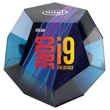
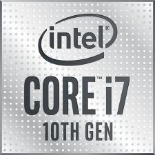
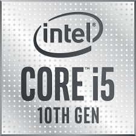
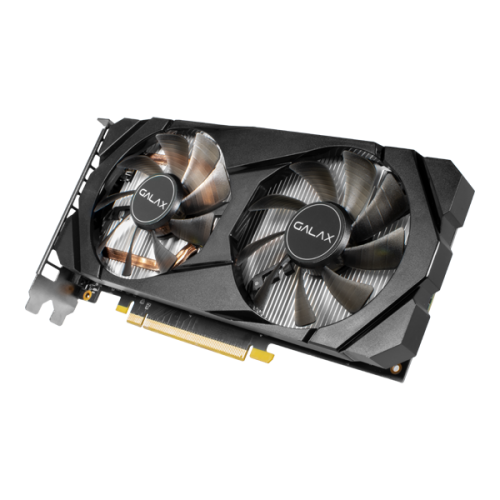
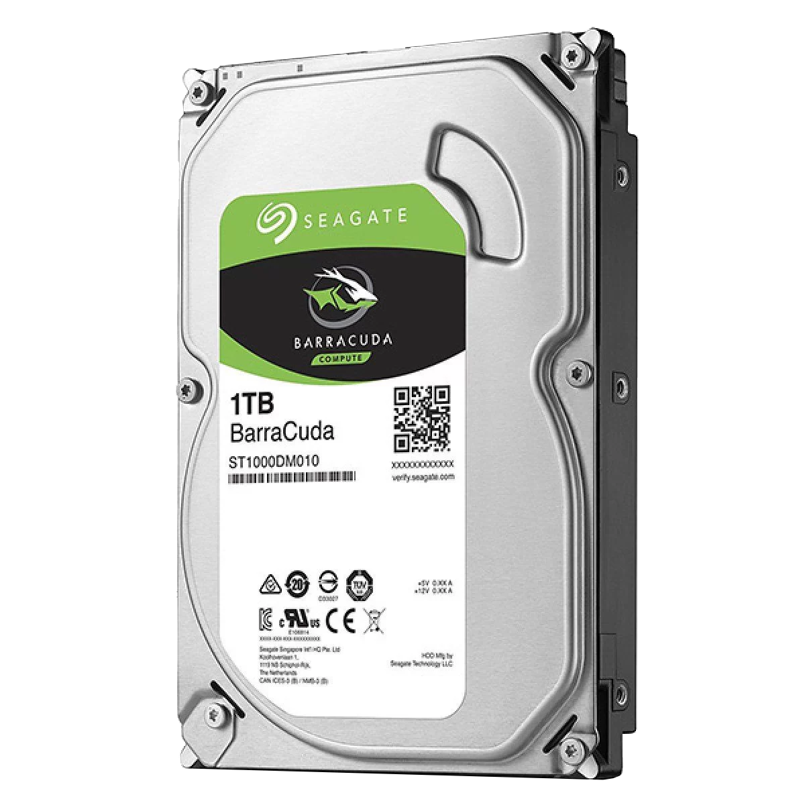
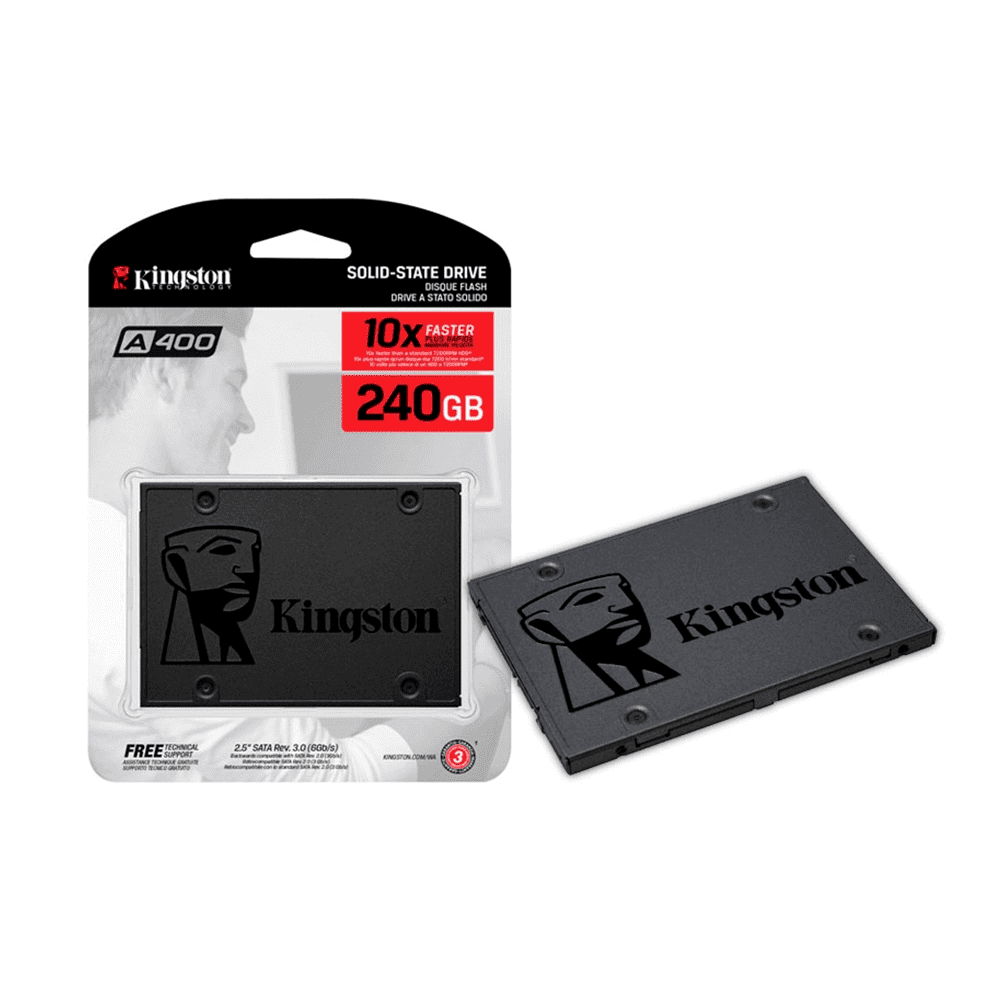
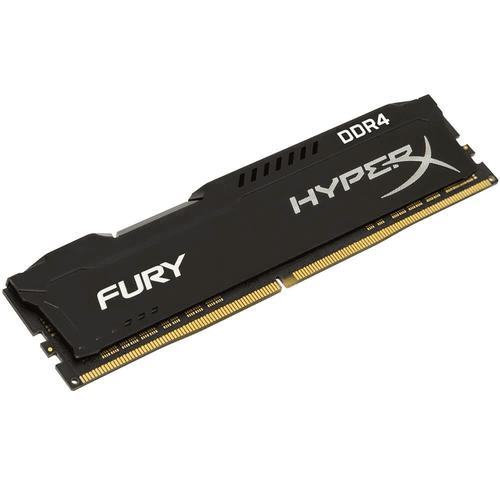
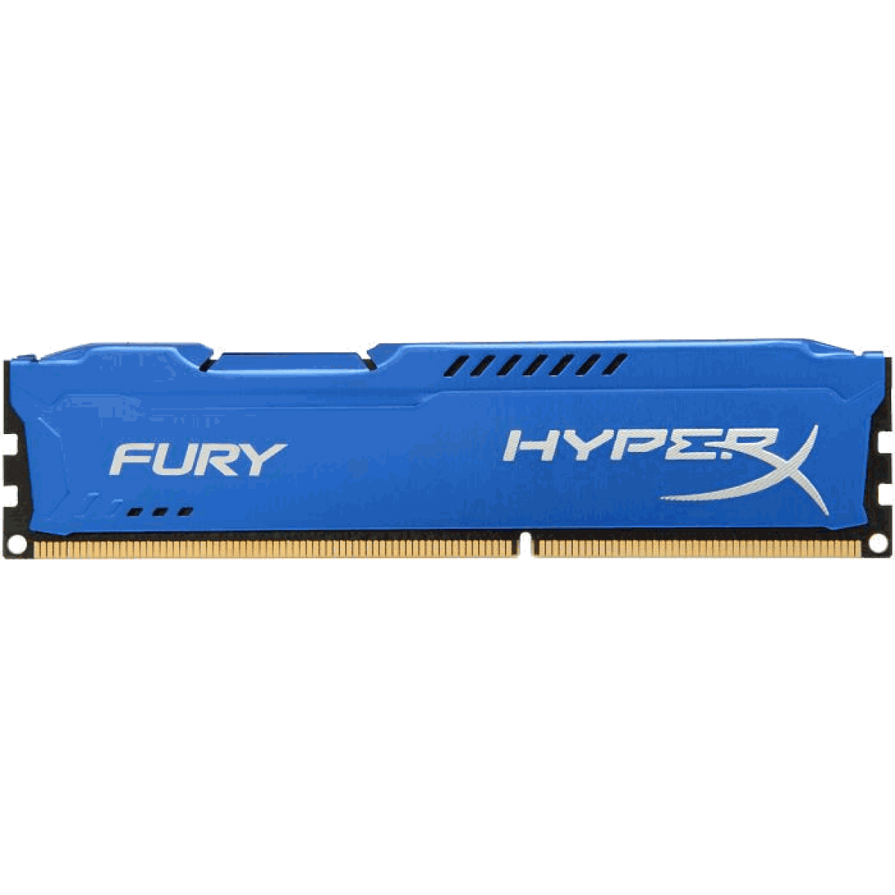
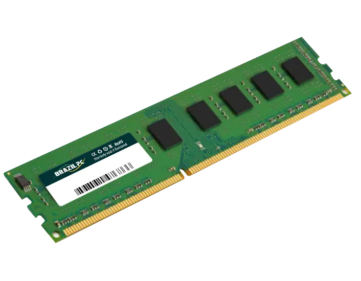

Apresentando a nova 9ª geração de processadores desktop Intel® Core™, o primeiro processador desbloqueado para desktop convencional. Quando combinado com a Intel® Optane™ memory, acelera o carregamento e a abertura dos seus jogos. Com até 5 GHz e multitarefas de 16 vias, leve a sua criatividade para o próximo nível com a potência necessária para criar, editar e compartilhar.

A 10ª geração de processadores Intel® Core™, com os gráficos Intel® Iris® Plus, proporcionam ao PC inteligência artificial (IA) em larga escala pela primeira vez. Com desempenho de IA acelerado em aproximadamente 2,5 vezes1, aproximadamente 2 vezes2 mais desempenho de gráficos, velocidade sem fio quase 3 vezes mais rápida3 com o Intel® Wi-Fi 6 (Gig+) e a porta mais rápida4 e versátil disponível através da tecnologia Thunderbolt™ 3, esses processadores proporcionam um novo nível de integração para aprimorar as experiências com PCs hoje e no futuro.

A 10ª geração de processadores Intel® Core™, com os gráficos Intel® Iris® Plus, proporcionam ao PC inteligência artificial (IA) em larga escala pela primeira vez. Com desempenho de IA acelerado em aproximadamente 2,5 vezes1, aproximadamente 2 vezes2 mais desempenho de gráficos, velocidade sem fio quase 3 vezes mais rápida3 com o Intel® Wi-Fi 6 (Gig+) e a porta mais rápida4 e versátil disponível através da tecnologia Thunderbolt™ 3, esses processadores proporcionam um novo nível de integração para aprimorar as experiências com PCs hoje e no futuro.
A 10ª geração de processadores Intel® Core™, com os gráficos Intel® Iris® Plus, proporcionam ao PC inteligência artificial (IA) em larga escala pela primeira vez. Com desempenho de IA acelerado em aproximadamente 2,5 vezes1, aproximadamente 2 vezes2 mais desempenho de gráficos, velocidade sem fio quase 3 vezes mais rápida3 com o Intel® Wi-Fi 6 (Gig+) e a porta mais rápida4 e versátil disponível através da tecnologia Thunderbolt™ 3, esses processadores proporcionam um novo nível de integração para aprimorar as experiências com PCs hoje e no futuro.

A nova GeForce GTX 1660 (1-CLICK OC) é meticulosamente trabalhada para oferecer dissipação de calor superior, usando materiais premium junto com Dual FAN de 90 mm. Para um melhor desempenho, o recurso 1 Click OC incluído executa o processo com apenas 1 botão que impulsionará as configurações de overclock mais altas e estáveis para a placa gráfica. O backplate modish adiciona rigidez à placa para ajudar a não entortar.

Placa de Vídeo VGA Gigabyte AMD Radeon RX 570 4GB Gaming GDDR5 DVI-D/HDMI/DP - GV-RX570GAMING-4GD

HD SEAGATE BARRACUDA 1TB 3.5" SATA III 6GB/S, ST1000DM010

Hd Ssd 240gb Kingston 2.5 Sata Ill A400 - Sa400s37/240g

Uma memória de última geração, é assim que podemos definir as novas HyperX FURY DDR4. Com uma velocidade incrível e um novo dissipador atualizado, com certeza o gamer irá sempre performar em alto nível. A nova família HyperX Fury DDR4 é compatível com as mais recentes CPUs Intel e AMD.

Entre no jogo com HyperX® FURY. Até quem não é expert já começa com altas velocidades, já que o FURY reconhece automaticamente sua plataforma host e faz o overclock automaticamente para a maior frequência proporcionando grande poder para seu próximo jogo de vida ou morte.
O modelo de dissipador de calor assimétrico do FURY permite que você se destaque na multidão. Está disponível em preto, azul, vermelho e - pela primeira vez na linha HyperX - branco e preto. Assim seu equipamento pode refletir seu estilo e você pode mostrá-lo com orgulho, sem gastar muito, já que o FURY tem um preço acessível.

- Capacidade: 2GB
- Tecnologia: DDR2
- Freqüência: 800 MHZ
- Marca: BRAZILPC
-Produto: BOX